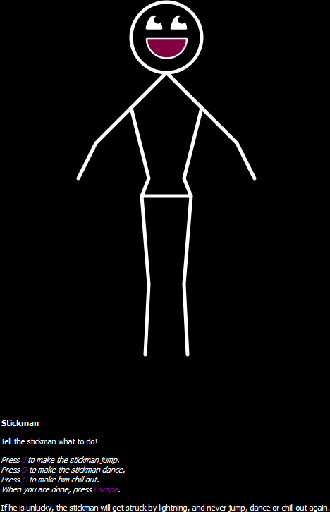
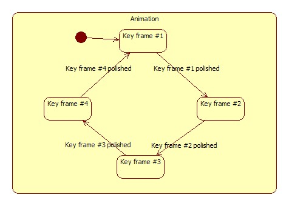
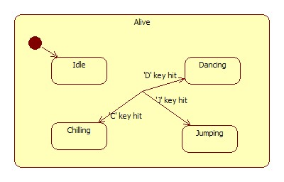
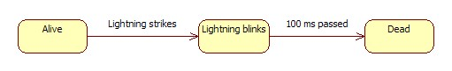

Stickman Example
The Stickman example shows how to animate transitions in a state machine to implement key frame animations.

In this example, we will write a small application which animates the joints in a skeleton and projects a stickman figure on top. The stickman can be either "alive" or "dead", and when in the "alive" state, he can be performing different actions defined by key frame animations.
Animations are implemented as composite states. Each child state of the animation state represents a frame in the animation by setting the position of each joint in the stickman's skeleton to the positions defined for the particular frame. The frames are then bound together with animated transitions that trigger on the source state's propertiesAssigned() signal. Thus, the machine will enter the state representing the next frame in the animation immediately after it has finished animating into the previous frame.

The states for an animation is constructed by reading a custom animation file format and creating states that assign values to the "position" properties of each of the nodes in the skeleton graph.
QState *frameState = new QState(topLevel);
const int nodeCount = animation.nodeCount();
for (int j=0; j<nodeCount; ++j)
frameState->assignProperty(m_stickMan->node(j), "pos", animation.nodePos(j));
The states are then bound together with signal transitions that listen to the propertiesAssigned() signal.
previousState->addTransition(previousState, &QState::propertiesAssigned, frameState);
The last frame state is given a transition to the first one, so that the animation will loop until it is interrupted when a transition out from the animation state is taken. To get smooth animations between the different key frames, we set a default animation on the state machine. This is a parallel animation group which contains animations for all the "position" properties and will be selected by default when taking any transition that leads into a state that assigns values to these properties.
m_machine = new QStateMachine();
m_machine->addDefaultAnimation(m_animationGroup);
Several such animation states are constructed, and are placed together as children of a top level "alive" state which represents the stickman life cycle. Transitions go from the parent state to the child state to ensure that each of the child states inherit them.

This saves us the effort of connect every state to every state with identical transitions. The state machine makes sure that transitions between the key frame animations are also smooth by applying the default animation when interrupting one and starting another.
Finally, there is a transition out from the "alive" state and into the "dead" state. This is a custom transition type called LightningSrikesTransition which samples every second and triggers at random (one out of fifty times on average.)
class LightningStrikesTransition: public QEventTransition { public: LightningStrikesTransition(QAbstractState *target) : QEventTransition(this, QEvent::Timer) { setTargetState(target); startTimer(1000); } bool eventTest(QEvent *e) override { return QEventTransition::eventTest(e) && QRandomGenerator::global()->bounded(50) == 0; } };
When it triggers, the machine will first enter a "lightningBlink" state which uses a timer to pause for a brief period of time while the background color of the scene is white. This gives us a flash effect when the lightning strikes.
QTimer *timer = new QTimer(lightningBlink);
timer->setSingleShot(true);
timer->setInterval(100);
QObject::connect(lightningBlink, &QAbstractState::entered,
timer, QOverload<>::of(&QTimer::start));
QObject::connect(lightningBlink, &QAbstractState::exited,
timer, &QTimer::stop);
We start and stop a QTimer object when entering and exiting the state. Then we transition into the "dead" state when the timer times out.
lightningBlink->addTransition(timer, &QTimer::timeout, m_dead);
When the machine is in the "dead" state, it will be unresponsive. This is because the "dead" state has no transitions leading out.
